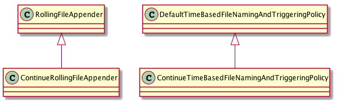

Grails从2.2升级到2.3.3遇到的问题
Debug
升级到2.3 以后我就找不到grails-debug 这个命令了。后进过查询发现原来是被 grails -debug 这个参数替代了。是要了这个参数以后又遇到一个问题。就是需要通过Remote Debug 的方式连接进去才可以。但是不管咋地都不在断点处停下来。真的让人抓狂。
最后通过这个一个老外的一段话给解决了
In Intellij go to “Run / Edit Configurations”, click + then “Remote” and name it whatever you want (example “Grails Remote”) then press ok. Then from the command line do: grail run-app –debug-fork Attach your debugger by running your “Grails Remote” config. Done.
原来是需要使用 grails run-app –debug-fork 命令来做。解了，亲测！
增强LogBack的RollingFileAppender
前因
有系统使用Logback使用RollingFileAppender来记录日志，并且每个小时换成一个新的文件。 这样有个问题如果一个系统在超过一个小时没有打印任何log的时候。 log文件就会出现不连续的情况。例如用如下配置：
<appender name="LOG"
class="ch.qos.logback.core.rolling.RollingFileAppender">
<file>target/test-output/rolling_file.log</file>
<rollingPolicy
class="ch.qos.logback.core.rolling.TimeBasedRollingPolicy">
<FileNamePattern>
target/test-output/qunarrolling_file.%d{yyyy-MM-dd-HH}.log
</FileNamePattern>
</rollingPolicy>
<layout>
<Pattern>%date [%thread] %-5level %logger - %msg%n</Pattern>
</layout>
</appender>
如果我在2014-03-13-15开始打印log，15点有打印信息，16点没有，17点有。那么我的log文件如下：
如果我在2014-03-13-15开始打印log，15点有打印信息，16点没有，17点有。那么我的log文件如下：
ls -1
rolling_file.log
rolling_file.2014-03-13-15.log
rolling_file.2014-03-13-17.log
没有 rolling_file.2014-03-13-15.log 这个文件。我们希望是就是么有log输出，也需要有这个文件。这个就是我们的需求。 为了这个需求开始读logback的代码。我版的版本是1.1.1
分析
通过阅读LogBack的源码发现如下结构：
![class RollingFileAppender{ +rollover():void +subAppend(event:E):void } interface TriggeringPolicy{ } interface RollingPolicy{ } class TimeBasedRollingPolicy{ } class RollingPolicyBase{ } class DefaultTimeBasedFileNamingAndTriggeringPolicy{ +isTriggeringEvent(activeFile:File, event E) } RollingFileAppender -left-> TriggeringPolicy RollingFileAppender -right-> RollingPolicy RollingPolicy <|.. RollingPolicyBase RollingPolicyBase <|-- TimeBasedRollingPolicy TimeBasedRollingPolicy ..|> TriggeringPolicy TimeBasedRollingPolicy --> DefaultTimeBasedFileNamingAndTriggeringPolicy](_images/plantuml-52b276328f19272bb063ec61cf468244d1e30727.png)
- RollingFileAppender
- 根据RollingPolicy和TriggeringPolicy的计算结果来备份文件，并且创建一下新的文件来记录log。这个功能的实现是由rollover方法来实现。
- RollingPolicy
- 计算什么时候要去新建一个文件。RollingFileAppender在何时新建文件这方面完全听他的。具体的是在RollingFileAppender的subAppend方法中。不过真正觉得何时创建文件，并不是该接口的实现累实现的。而是下面的DefaultTimeBasedFileNamingAndTriggeringPolicy
- DefaultTimeBasedFileNamingAndTriggeringPolicy
- 该类是最后的老板，有他决定是不是到了要进行文件切换的时候了。具体的实现方法为：isTriggeringEvent
找到了最后的老板DefaultTimeBasedFileNamingAndTriggeringPolicy，我只要简单扩展这个类就可以了。然后配置logback的时候就使用我们这个就可以了。
动手
新建一个类继承 DefaultTimeBasedFileNamingAndTriggeringPolicy 重写其中的isTriggeringEvent方法。在该方法中将一次将log的文件名变成当前时间的文件名的步骤变成，分成多个时间段。循环做rollover 的动作。于是有了下面的代码：
1 2 3 4 5 6 7 8 9 10 11 12 13 | public boolean isTriggeringEvent(File activeFile, final E event)
long time = System.currentTimeMillis();
Date rollFileDate = new Date(nextCheck);
while (time >= nextCheck && rc.getNextTriggeringMillis(rollFileDate) < time) {
Date dateOfElapsedPeriod = dateInCurrentPeriod;
addInfo("Elapsed period: " + dateOfElapsedPeriod);
elapsedPeriodsFileName = tbrp.fileNamePatternWCS.convert(dateOfElapsedPeriod);
tbrp.rollover();
setDateInCurrentPeriod(nextCheck);
computeNextCheck();
return true;
}
}
|
代码说明：
- 第4行 说明被漏掉的时间点会进入循环。
- 第8行 简单的认为TimeBasedRollingPolicy中rollover会做所有事情。
其实第8行并只是完成了重命名文件的任务。但是并没有完成创建新文件，将新文件打开的功能。最后还是在rollover方法中做了。这样的改动总结成两个字 “失败” ！ 问题出现在那里呢？
重新理顺思路： #. 理清楚DefaultTimeBasedFileNamingAndTriggeringPolicy 的职责，他就是用于计算是否要rollover, 提供当前文件的文件名就可以了。他并不去参与rollover这个过程。rollover过程也只有RollingFileAppender 来处理。 #. 遵循logback的惯例，新建一个类继承于RollingFileAppender， 让他在subAppend的时候调用多次rollover就好了。
重写

ContinueRollingFileAppender 的重载subAppend方法为：
@Override
protected void subAppend(E event) {
synchronized (triggeringPolicy) {
while (triggeringPolicy.isTriggeringEvent(currentlyActiveFile, event)) {
rollover();
}
}
super.subAppend(event);
}
ContinueTimeBasedFileNamingAndTriggeringPolicy的最终内容变为：
public class ContinueTimeBasedFileNamingAndTriggeringPolicy<E> extends DefaultTimeBasedFileNamingAndTriggeringPolicy<E> {
protected LogbackLock lock = new LogbackLock();
@Override
public void start() {
if (tbrp != null) {
super.start();
}
}
public boolean isTriggeringEvent(File activeFile, final E event) {
long time = System.currentTimeMillis();
Date rollFileDate = new Date(nextCheck);
if (time >= nextCheck && rc.getNextTriggeringMillis(rollFileDate) < time) {
Date dateOfElapsedPeriod = dateInCurrentPeriod;
addInfo("Elapsed period: " + dateOfElapsedPeriod);
elapsedPeriodsFileName = tbrp.fileNamePatternWCS.convert(dateOfElapsedPeriod);
System.out.println("elapsedPeriodsFileName is " + elapsedPeriodsFileName);
setDateInCurrentPeriod(nextCheck);
computeNextCheck();
return true;
} else {
return false;
}
}
}
最后我把配置文件修改为：
<configuration scan="true">
<appender name="LOG"
class="ch.qos.logback.core.rolling.ContinueRollingFileAppender">
<file>target/test-output/demo.log</file>
<rollingPolicy
class="ch.qos.logback.core.rolling.TimeBasedRollingPolicy">
<FileNamePattern>
target/test-output/demo.%d{yyyy-MM-dd-HH-mm}.log
</FileNamePattern>
<timeBasedFileNamingAndTriggeringPolicy
class="ch.qos.logback.core.rolling.ContinuePolicyTimeBasedFileNamingAndTriggeringPolicy">
</timeBasedFileNamingAndTriggeringPolicy>
</rollingPolicy>
<layout>
<Pattern>%date [%thread] %-5level %logger - %msg%n</Pattern>
</layout>
</appender>
<root level="DEBUG">
<appender-ref ref="LOG"/>
</root>
</configuration>
这个时候一切按照我们需求中要求的进行着。这个小功能就扩展结束了。
收工
- 在写完这点东西后想想自己的收获：
- 发现LogBack设计很不错，可以考虑通读一下。
- 在扩展现有框架的时候注意了解现有框架的思路。不要违反他的原来的设计思路。不然你会倒霉的。